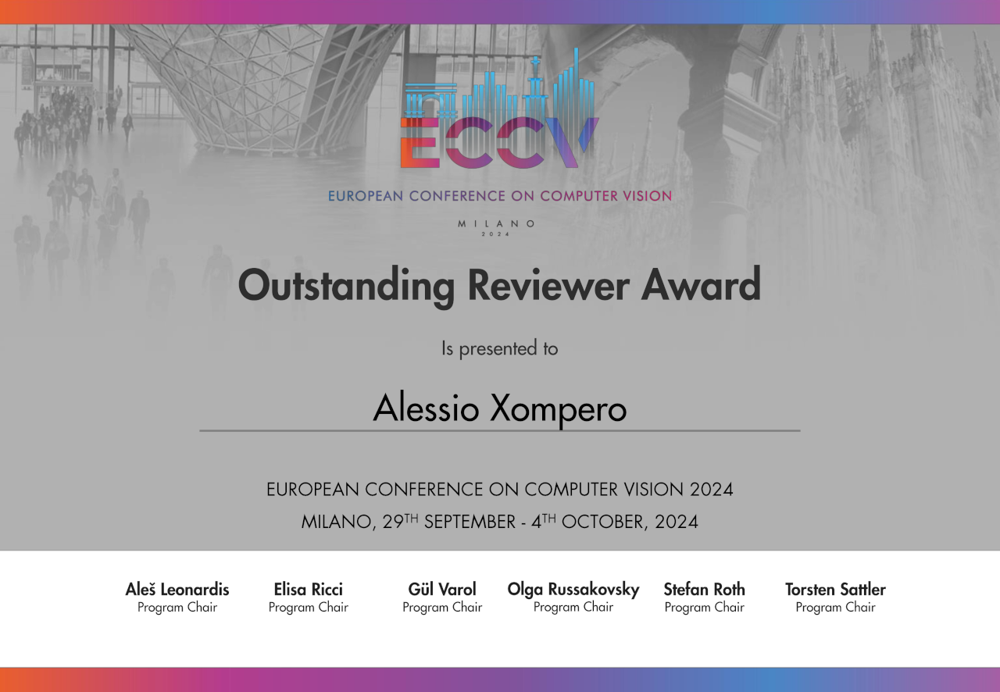

Research interests
Computer Vision | Machine Learning | Deep learning | Image and video processing | Perception for robotics | Visual privacy
News
| 2025/01/15 | I am a guest editor for the IEEE RA-P Special Collection of "Autonomous Robotic Grasping and Manipulation in Real-World Applications" [link] |
| 2024/12/15 | The Robotic Grasping and Manipulation Competition at ICRA 2025 is now live and accepting applications. Join our handover track competition [link] |
| 2024/12/11 | Pre-print and webpage of our recent work on Stereo Hand-Object Reconstruction for Human-to-Robot Handover now online [link] |
| 2024/12/11 | Competition column about the Robotic Grasping and Manipulation Competition at ICRA 2024 is online in the IEEE Robotics & Automation Magazine (Issue 4: December 2024) [link] |
| 2024/11/17 | I will serve as a reviewer for the IEEE/CVF Conference on Computer Vision and Pattern Recognition 2025 (CVPR) [link] |
| 2024/09/23 | Recognised as an outstanding reviewer for ECCV 2024 [link] |
Recent blog posts
Autonomous Robotic Grasping and
Manipulation in Real-World Applications

Guest editor
IEEE RA-P Special Collection - Call for Papers


Awards
|  |

|

|

|

|
|
Outstanding Reviewer ECCV 2024 (top 3% of 7,293 reviewers) |
Outstanding Reviewer IEEE/CVF CVPR 2024 (top 2% of 9,872 reviewers) |
Outstanding Reviewer IEEE ICASSP 2023 |
Outstanding Reviewer IEEE ICASSP 2022 (31 reviewers selected) |
Top Reviewer IEEE ICIP 2020 (top 3% - 22 reviewers selected) |
Selected publications

A spatio-temporal multi-scale binary descriptor IEEE Transactions on Image Processing 2020 |
 Cross-Camera View-Overlap Recognition International Workshop on Smart Distributed Cameras at European Conference on Computer Vision, 2022 |

MORB: a multi-scale binary descriptor IEEE International Conference on Image Processing 2018 |
 The CORSMAL benchmark for the prediction of the properties of containers IEEE Access, vol. 10, 2022 |
  Audio-Visual Object Classification for Human-Robot Collaboration IEEE International Conference on Acoustic, Speech and Signal Processing 2022 |
 Multi-view shape estimation of transparent containers IEEE International Conference on Acoustic, Speech and Signal Processing 2020 |